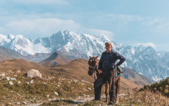

Сегодня мы подготовили для вас топ-10 правил поездки в Грузию. Мы надеемся, что эта статья развеет некоторые заблуждения и ложные ожидания и сделает ваш отдых в Грузии волшебным.
Грузинское гостеприимство
Очень часто встречаются отзывы, что нет никакого грузинского гостеприимства. Чаще всего - от людей, которые сами не умеют дружить и быть радушными.

Запомните: грузинское гостеприимство работает по полной, если вы сами готовы открыться и быть другом.
Хорошие экскурсии
Чтобы не разочароваться в экскурсионной программе, стоит заранее позаботиться о выборе гида. К сожалению, в Грузии нет обязательной сертификации гидов и экскурсионных бюро, поэтому есть вероятность нарваться на непрофессионалов.
Вкусная еда
Многие полагают, что в Грузии они смогут есть вкусную еду и пить вино на каждом шагу, при этом тратя на это сущие копейки. Это не так.
В Грузии действительно можно найти недорогие и хорошие кафе, а также рестораны, но для этого нужно читать отзывы и рекомендации. Так вы не разочаруетесь в грузинской кухне и не получите пищевое отравление, а вместо этого приобретете только приятные впечатления и сытость для прогулок.
Быстрый сервис
С этим нужно просто смириться. В Грузии, как впрочем и других регионах Кавказа, не привыкли торопиться. Вам стоит набраться терпения и принять с улыбкой нерасторопных сотрудников.
Хорошее вино
Грузия считается родиной вина, и здесь принято говорить: «Плохого вина не бывает. Бывает только хорошее и очень хорошее вино!». Однако, нужно понимать, что и здесь вы можете купить не очень хорошее вино.
Не стоит брать вино в туристических местах. Если покупаете домашние вина, берите ту бутылку, из которой вам наливали на пробу.
Не говорите о политике
«Нам досталось немало грехов из грузинской истории, которые мы должны взять на себя. Этого нам вполне достаточно, не следует принимать на свои плечи еще и грехи русской истории.»
М. Мамардашвили, выдающийся философ XX века.
Все плохое происходит от политиков – Так говорят в Грузии. Вы приехали отдыхать, а не обсуждать политические игры и доказывать свою правоту. Просто опустите эти темы и проведите отпуск счастливо.
Не ругайтесь
Мат и ненормативная лексика понятны не только старшему поколению, знающему русский, но и всему остальному населению, и воспринимается очень негативно. Не стоит использовать мат как в обращении к грузинам, так и в общении друг с другом. Если ругаться при грузинах, они не просто за это «по голове не погладят», реакция может быть абсолютно непредсказуемая, вплоть до драки, а Вам, наверняка, не нужны лишние проблемы в отпуске :).
Наркотики в Грузии
Не стоит баловаться наркотическими веществами в Грузии. Несмотря на то, что в законодательство внесены предложения на легализацию легких наркотиков, грузинская полиция серьезно следит за такими правонарушениями.
Не все знают русский язык
Несмотря на то, что Грузия является территорией постсоветского пространства, здесь далеко не всего знают русский. Как правило, на русском языке говорят люди старшего возраста, а молодёжь лучше знает английский язык.
Грузинские мужчины не женятся на второй день знакомства
Да и вообще редко женятся на девушках не своей национальности. Яркие, харизматичные и горячие грузинские кавалеры будут ухаживать за вами как никто, звать замуж и обещать золотые горы. Но стоит помнить, что это всего лишь романтическое приключение длинной в ваш отпуск. Не более того.